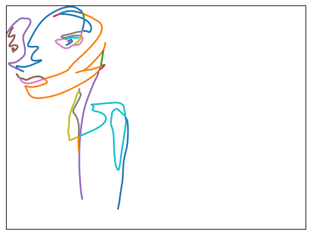
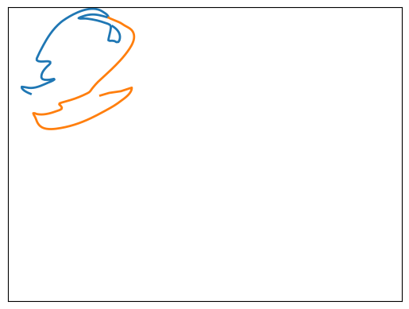
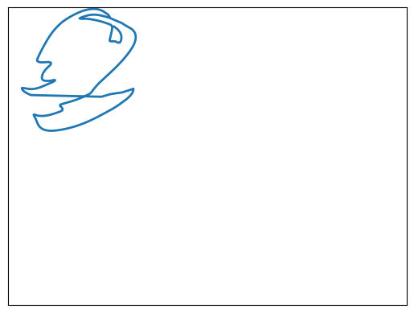
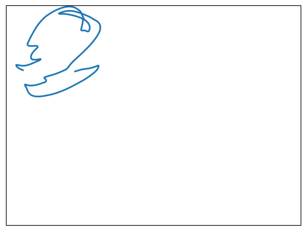
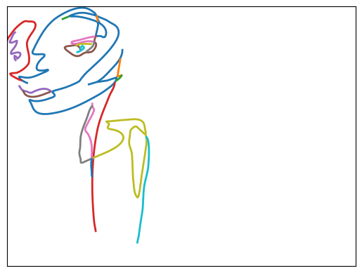
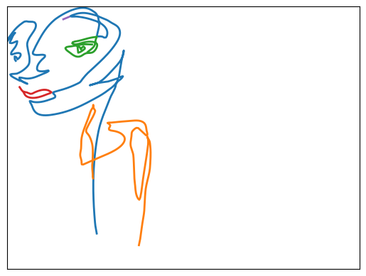
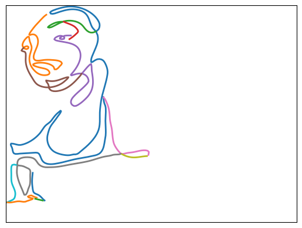
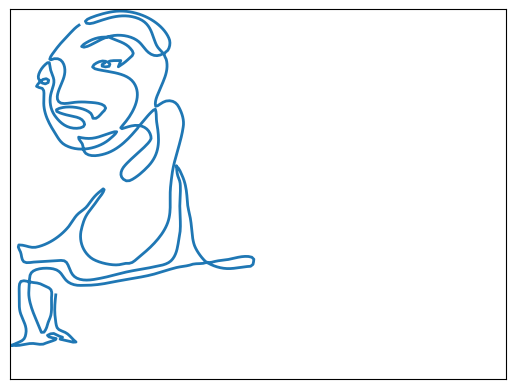
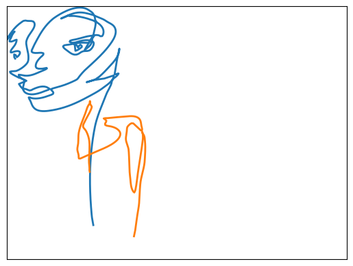

fname = "../data/svg/0000.svg"
strokes = svg_to_strokes(fname)
print(f"{fname} has {len(strokes)} distinct strokes")
plot_strokes(strokes)../data/svg/0000.svg has 22 distinct strokes
When loading up an SVG and parsing its paths, sometimes the paths are segmented more than they need to be. For example:
fname = "../data/svg/0000.svg"
strokes = svg_to_strokes(fname)
print(f"{fname} has {len(strokes)} distinct strokes")
plot_strokes(strokes)../data/svg/0000.svg has 22 distinct strokes
Taking a closer look at the first two strokes, it appears that they could be linked.
plot_strokes([strokes[0], strokes[1]])
# glance at the underlying data and path lengths
strokes[0][:5], len(strokes[0]), strokes[1][:5], len(strokes[1])
(array([[12.67485995, 64.03514953],
[11.58004151, 63.41852999],
[10.42656469, 62.66524592],
[ 9.32611317, 61.78332364],
[ 8.39037061, 60.78078948]]),
145,
array([[56.22437874, 6.67328336],
[57.31087459, 7.40713502],
[58.46074883, 8.07705417],
[59.64263365, 8.71468671],
[60.82516127, 9.35167852]]),
155)What’s not obvious yet is how to best join the strokes. Which endpoints of each line are closest?
Does the start of stroke 0 come closest to the end of stroke 1? If so, we’d concatenate the points of stroke 0 after the points of stroke 1.
plot_strokes([strokes[0], strokes[1]])
plot_strokes([np.concatenate([strokes[1], strokes[0]], axis=0)])

That didn’t work - there’s an awkward extra line that didn’t show up in the original image.
Instead we can iterate through the combinations and find the combination of endpoints with the shortest distance.
s0_endpoints = [
strokes[0][0],
strokes[0][-1],
]
s1_endpoints = [
strokes[1][0],
strokes[1][-1],
]
for pos0 in [0, -1]:
for pos1 in [0, -1]:
d = np.linalg.norm(s0_endpoints[pos0] - s1_endpoints[pos1])
print(
f"dist = {d} from s0_{'START' if pos0==0 else 'END'} to s1_{'START' if pos1==0 else 'END'}"
)dist = 72.02044347447433 from s0_START to s1_START
dist = 38.94401437099788 from s0_START to s1_END
dist = 6.7684841145897465 from s0_END to s1_START
dist = 52.632823136243246 from s0_END to s1_ENDplot_strokes([np.concatenate([strokes[0], strokes[1]], axis=0)])
We’ll want a helper function to join these strokes - for example if the closest distance was between stroke 0 start and and stroke 1 start, we’d have to flip one of the lists in order to concatenate them and haave a contiguous set of points.
join_endpoints (strokes, l_idx, l_pos, r_idx, r_pos)
select_2_strokes (strokes, l_idx, r_idx)
join_2_strokes (lhs, l_pos, rhs, r_pos)
plot_strokes([join_2_strokes(strokes[0], END, strokes[1], START)])
We’ll want to apply this function iteratively to a collection of strokes. So we’ll want to be able to pick 2 strokes out of the list, join them, and return them combined as a full list of strokes.
# verify joining 2 strokes and adding them back to the list
plot_strokes(join_endpoints(strokes, 0, END, 1, START))
Now we’ll want a way to find which pairs of strokes to join. Let’s start by iterating through all pairs of strokes and comparing the distance between their start and endpoints.
merge_until (strokes, dist_threshold=10.0)
merge_closest_strokes (strokes, dist_threshold=10.0)
closest_endpoint_pair (strokes)
actual_dist, l_idx, l_pos, r_idx, r_pos = closest_endpoint_pair(strokes)
print(actual_dist, l_idx, l_pos, r_idx, r_pos)
expected_lhs = strokes[l_idx][l_pos]
expected_rhs = strokes[r_idx][r_pos]
expected_dist = np.linalg.norm(expected_lhs - expected_rhs)
print(expected_dist)
test_eq(actual_dist, expected_dist)0.40342377522616846 12 -1 13 0
0.40342377522616846_, new_strokes = merge_closest_strokes(strokes)
# the list of strokes should be shorter by 1, since 2 strokes got merged
test_eq(len(strokes) - 1, len(new_strokes))
# the next closest distance should be different than what we got before,
# as that gap between lines no longer exists post-merge.
new_dist, *_ = closest_endpoint_pair(new_strokes)
test_ne(actual_dist, new_dist)
# Also if that was the shortest gap between points, the next distance we
# get will be larger.
test_eq(True, new_dist > actual_dist)r0, r_iter = merge_until(strokes, dist_threshold=10)
len(r0), [len(r) for r in r_iter](5, [22, 21, 20, 19, 18, 17, 16, 15, 14, 13, 12, 11, 10, 9, 8, 7, 6, 5])plot_strokes(r0)
# [plot_strokes(r) for r in r_iter]# rescaled_strokes = svg_to_strokes(
# "../../svg-dataset/sketch_mgmt/imgs_sorted/drawings_svg_cropped/1812.svg",
# total_n=1000,
# min_n=3,
# )
# plot_strokes(rescaled_strokes)
# joined_strokes, _ = merge_until(rescaled_strokes, dist_threshold=10.0)
# plot_strokes(joined_strokes)

closest_splice_pair (strokes)
splice_until (strokes, dist_threshold=10.0)
join_splice (strokes, l_idx, r_idx, k)
splice_2_strokes (lhs, rhs, k)
r1, r1_iter = splice_until(r0, 30.0)plot_strokes(strokes)
plot_strokes(r1)
